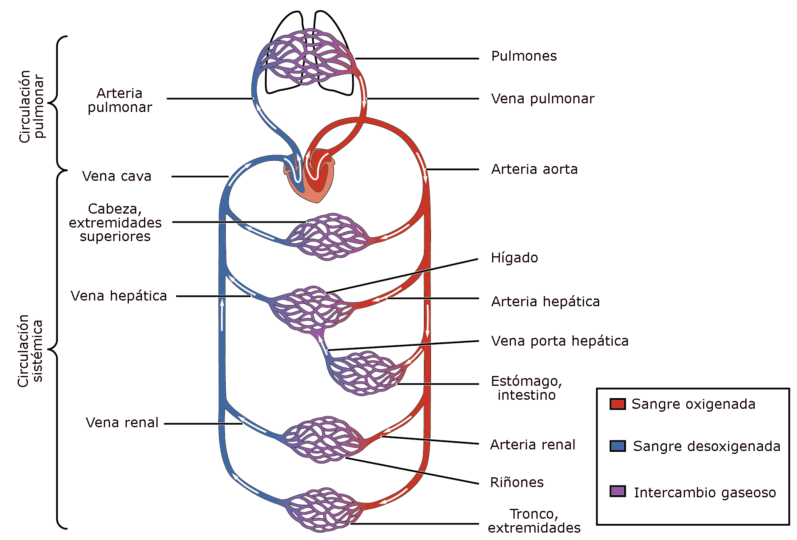
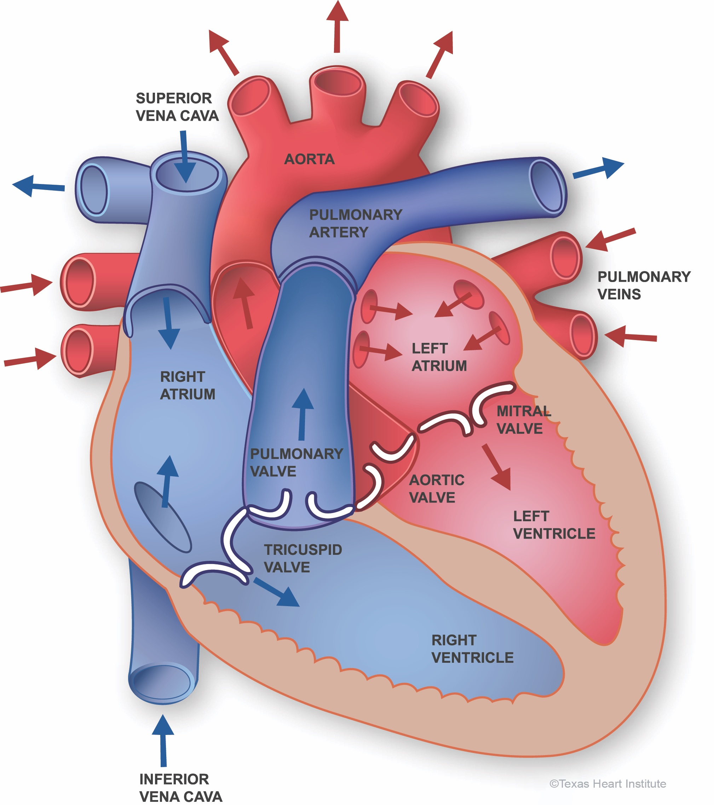
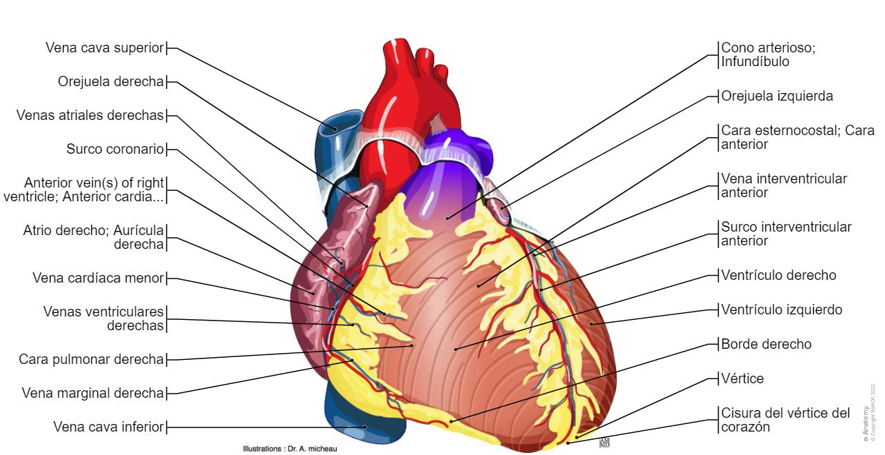
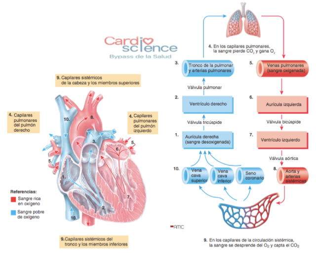
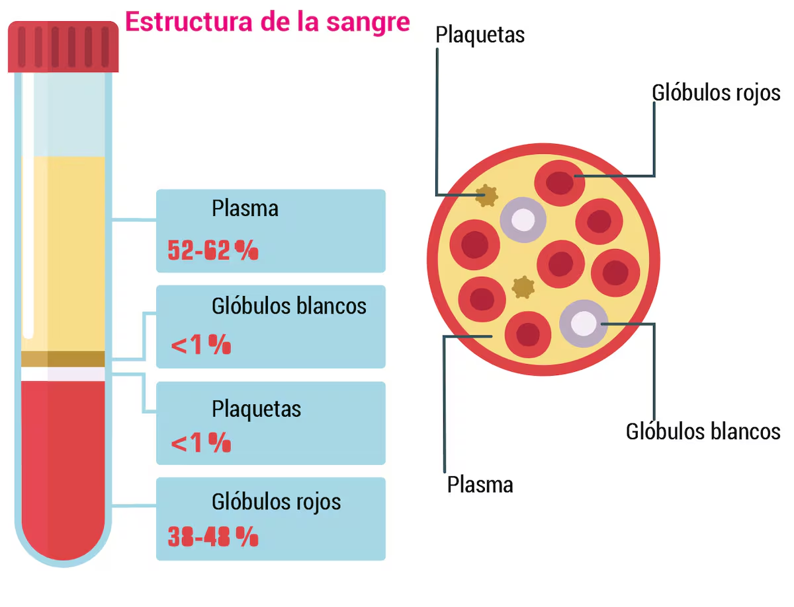
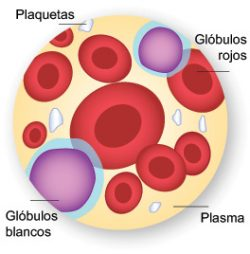

❤️ ¿Qué es el Sistema Circulatorio?
El sistema circulatorio, también llamado sistema cardiovascular, es el sistema encargado de transportar la sangre por todo el cuerpo. Es como una red de carreteras biológicas que conecta cada célula con el centro de distribución: el corazón. Gracias a este sistema, cada célula recibe oxígeno, nutrientes, hormonas y células inmunitarias, mientras los desechos metabólicos son recolectados para su eliminación.
El sistema circulatorio está compuesto por tres elementos fundamentales: el corazón (la bomba), los vasos sanguíneos (las carreteras) y la sangre (el transporte). Sin este sistema, el cuerpo no podría mantener la homeostasis, regular la temperatura ni defenderse contra infecciones.
🎯 Objetivos de Aprendizaje
Al finalizar este tema serás capaz de: identificar las partes del corazón y sus funciones, diferenciar entre circulación pulmonar y sistémica, describir los tipos de vasos sanguíneos y sus características, explicar la composición de la sangre y el papel de cada componente, y comprender el ciclo cardíaco (sístole y diástole).
🗺️ Anatomía General del Sistema Circulatorio
El sistema circulatorio humano es una red cerrada de vasos que mide aproximadamente 100,000 kilómetros si se estiraran todos los vasos sanguíneos de un adulto. Eso equivale a darle 2.5 vueltas a la Tierra. Esta red se divide en dos circuitos principales que trabajan en conjunto: la circulación pulmonar y la sistémica.

Figura 1: Circulación pulmonar (menor) y circulación sistémica (mayor) con sus vasos principales. Fuente: Wikipedia.
🔴 Circulación Pulmonar (Menor)
- Origen: Ventrículo derecho del corazón.
- Destino: Pulmones.
- Sangre: Desoxigenada (rica en CO₂).
- Vasos: Arteria pulmonar → capilares pulmonares → venas pulmonares.
- Función: Oxigenar la sangre y eliminar CO₂.
🔵 Circulación Sistémica (Mayor)
- Origen: Ventrículo izquierdo del corazón.
- Destino: Todo el cuerpo (excepto pulmones).
- Sangre: Oxigenada (rica en O₂).
- Vasos: Aorta → arterias → capilares → venas → venas cavas.
- Función: Distribuir oxígeno y nutrientes; recoger desechos.
¿Sabías que...?
La arteria pulmonar es la única arteria del cuerpo que transporta sangre desoxigenada, y las venas pulmonares son las únicas venas que transportan sangre oxigenada. Esto contradice la regla general de que "las arterias llevan sangre oxigenada y las venas, desoxigenada".
🫀 El Corazón: La Bomba de la Vida
El corazón es un órgano muscular del tamaño aproximado de un puño cerrado, que pesa entre 250 y 350 gramos. Está ubicado en el mediastino medio del tórax, ligeramente desplazado hacia la izquierda. Es el único órgano que nunca descansa: late aproximadamente 100,000 veces al día y bombeará cerca de 200 millones de litros de sangre a lo largo de una vida.

Figura 2: Anatomía del corazón con sus cuatro cámaras y válvulas principales. Fuente: Texas Heart Institute.

Figura 3: Vista anatómica del corazón con nomenclatura en español. Fuente: IMAIOS e-Anatomy.
Las Cuatro Cámaras del Corazón
El corazón está dividido en dos mitades por el tabique interauricular (entre aurículas) y el tabique interventricular (entre ventrículos). Cada mitad tiene una aurícula (cámara superior) y un ventrículo (cámara inferior).
🔵 Aurícula Derecha
Recibe sangre desoxigenada del cuerpo a través de las venas cavas superior e inferior. Tiene paredes delgadas y músculos pectíneos en su interior.
🔵 Ventrículo Derecho
Bombea sangre desoxigenada hacia los pulmones a través de la arteria pulmonar. Su pared es más delgada que la del ventrículo izquierdo porque la presión pulmonar es menor.
🔴 Aurícula Izquierda
Recibe sangre oxigenada de los pulmones a través de las cuatro venas pulmonares. Es la cámara más pequeña del corazón.
🔴 Ventrículo Izquierdo
Bombea sangre oxigenada a todo el cuerpo a través de la aorta. Tiene la pared más gruesa (miocardio más desarrollado) porque debe generar mayor presión.
Las Válvulas Cardíacas
Las válvulas son estructuras que garantizan que la sangre fluya en una sola dirección, impidiendo el reflujo. Funcionan como puertas de una sola vía.
| Válvula | Ubicación | Función | Tipo |
|---|---|---|---|
| Tricúspide | Aurícula derecha → Ventrículo derecho | Evita que la sangre regrese a la aurícula derecha | Atrioventricular (3 valvas) |
| Mitral (Bicúspide) | Aurícula izquierda → Ventrículo izquierdo | Evita que la sangre regrese a la aurícula izquierda | Atrioventricular (2 valvas) |
| Pulmonar | Ventrículo derecho → Arteria pulmonar | Evita que la sangre regrese al ventrículo derecho | Semilunar (3 semilunas) |
| Aórtica | Ventrículo izquierdo → Aorta | Evita que la sangre regrese al ventrículo izquierdo | Semilunar (3 semilunas) |
¿Sabías que...?
El sonido del latido cardíaco ("lub-dub") se produce por el cierre de las válvulas. El "lub" es el cierre de las válvulas tricúspide y mitral (sístole ventricular), y el "dub" es el cierre de las válvulas pulmonar y aórtica (inicio de la diástole). Si escuchas un "soplo cardíaco", puede indicar que una válvula no cierra bien.
💓 El Ciclo Cardíaco: Sístole y Diástole
El ciclo cardíaco es la secuencia de eventos que ocurren durante un solo latido del corazón. Dura aproximadamente 0.8 segundos cuando el corazón late a 75 latidos por minuto. Se divide en dos fases principales: sístole (contracción) y diástole (relajación).
📊 Fases del Ciclo Cardíaco
1. Sístole Auricular (0.1 seg): Las aurículas se contraen y empujan la sangre hacia los ventrículos, que estaban relajados y llenándose.
2. Sístole Ventricular (0.3 seg): Los ventrículos se contraen con fuerza. La presión cierra las válvulas tricúspide y mitral ("lub") y abre las válvulas pulmonar y aórtica. La sangre sale hacia los pulmones y el cuerpo.
3. Diástole Ventricular (0.4 seg): Los ventrículos se relajan. La presión cae, cierran las válvulas pulmonar y aórtica ("dub"), y la sangre comienza a llenar las aurículas desde las venas.
4. Diástole Auricular: Las aurículas se relajan y reciben sangre de las venas cavas y venas pulmonares, preparándose para el siguiente ciclo.

Figura 4: Sistemas de circulación pulmonar y sistémica con el flujo sanguíneo paso a paso. Fuente: Cardio Science.
¿Sabías que...?
Durante toda tu vida, tu corazón bombeará aproximadamente 3,000 millones de litros de sangre. Eso equivale a llenar 1,200 piscinas olímpicas. Y todo esto con un músculo del tamaño de tu puño.
🩸 Vasos Sanguíneos: Las Carreteras del Cuerpo
Los vasos sanguíneos son tubos que transportan la sangre desde el corazón hacia los tejidos (arterias) y de vuelta al corazón (venas). En los tejidos, los capilares —vasos microscópicos— permiten el intercambio de gases, nutrientes y desechos entre la sangre y las células.
Estructura de los Vasos Sanguíneos
Todos los vasos sanguíneos (excepto los capilares) tienen tres capas:
- Túnica íntima (interna): Endotelio liso que reduce la fricción de la sangre.
- Túnica media (media): Tejido muscular liso y fibras elásticas que permiten la contracción y expansión.
- Túnica externa (adventicia): Tejido conjuntivo que protege y ancla el vaso.
| Característica | Arterias | Venas | Capilares |
|---|---|---|---|
| Dirección del flujo | Del corazón a los tejidos | De los tejidos al corazón | Conectan arterias y venas |
| Grosor de pared | Gruesa (mucha muscular) | Delgada (poca muscular) | Extremadamente delgada (1 célula) |
| Diámetro | Relativamente pequeño | Relativamente grande | Microscópico (8-10 μm) |
| Presión sanguínea | Alta | Baja | Muy baja |
| Válvulas | No (excepto aorta y pulmonar) | Sí (válvulas unidireccionales) | No |
| Pulso | Palpable | No palpable | No palpable |
| Función principal | Distribuir sangre | Recoger sangre | Intercambio de sustancias |
Jerarquía de los Vasos Sanguíneos
🫀 Arterias (Aorta y ramas)
Vasos de gran calibre que salen del corazón. La aorta es la mayor, con un diámetro de ~2.5 cm. Transportan sangre a alta presión.
📏 Arteriolas
Ramas pequeñas de las arterias. Controlan el flujo sanguíneo a los tejidos mediante la contracción/relajación de su músculo liso.
🔬 Capilares
Redes microscópicas donde ocurre el intercambio. Sus paredes son de una sola célula de grosor. Cada célula del cuerpo está a menos de 0.1 mm de un capilar.
📏 Vénulas
Pequeños vasos que recogen la sangre de los capilares. Se unen para formar venas más grandes.
🫀 Venas (Venas cavas)
Vasos de gran calibre que retornan sangre al corazón. Las venas cavas superior e inferior desembocan en la aurícula derecha.
¿Sabías que...?
Si colocaras todos los capilares de tu cuerpo uno tras otro, medirían aproximadamente 40,000 kilómetros. Eso es casi la circunferencia de la Tierra. Los capilares son tan finos que los glóbulos rojos deben pasar de uno en uno, como en una fila india.
🩸 La Sangre: El Transporte de la Vida
La sangre es un tejido conectivo líquido que constituye aproximadamente el 7-8% del peso corporal (unos 5 litros en un adulto). Es un fluido complejo compuesto por plasma (líquido) y elementos formes (células y fragmentos celulares). La sangre es el medio de transporte universal del cuerpo.

Figura 5: Composición de la sangre: plasma (52-62%), glóbulos rojos (38-48%), glóbulos blancos y plaquetas (<1%). Fuente: ABC Color.

Figura 6: Vista microscópica de los componentes celulares de la sangre. Fuente: Texas Heart Institute.
El Plasma (55% de la sangre)
El plasma es el líquido amarillento que constituye aproximadamente el 55% del volumen sanguíneo. Es un 90% agua y un 10% solutos disueltos.
- Proteínas plasmáticas: Albúmina (mantener presión osmótica), globulinas (inmunidad), fibrinógeno (coagulación).
- Nutrientes: Glucosa, aminoácidos, lípidos, vitaminas.
- Hormonas: Transportadas desde glándulas endocrinas hasta sus órganos diana.
- Desechos: Urea, creatinina, ácido úrico (transportados a riñones e hígado).
- Gases: CO₂ disuelto, O₂ en pequeñas cantidades.
- Iones: Sodio, potasio, calcio, cloro, bicarbonato (regulación del pH).
Elementos Formes (45% de la sangre)
🔴 Glóbulos Rojos (Eritrocitos)
Constituyen el 40-45% de la sangre. No tienen núcleo. Contienen hemoglobina, una proteína con hierro que se une al oxígeno. Transportan O₂ desde los pulmones a los tejidos y CO₂ de vuelta. Viven ~120 días. Se producen en la médula ósea.
⚪ Glóbulos Blancos (Leucocitos)
Representan <1% de la sangre. Son células del sistema inmunitario. Tipos: neutrófilos (defensa bacteriana), linfocitos (anticuerpos), monocitos (fagocitosis), eosinófilos (parásitos), basófilos (alergias). Tienen núcleo y se producen en médula ósea y ganglios linfáticos.
🟡 Plaquetas (Trombocitos)
Fragmentos celulares sin núcleo. Participan en la coagulación sanguínea. Cuando hay una herida, se agregan en el sitio de lesión y liberan sustancias que activan la formación del coágulo. Viven ~10 días.
💧 Plasma
El medio líquido que transporta todo. Mantiene el pH sanguíneo (~7.4), la presión osmótica y la temperatura corporal. El plasma donado se usa para transfusiones y tratamientos médicos.
¿Sabías que...?
El cuerpo produce aproximadamente 2 millones de glóbulos rojos nuevos por segundo para reemplazar los que envejecen. Un glóbulo rojo puede completar un circuito completo del cuerpo (corazón → pulmones → cuerpo → corazón) en aproximadamente 60 segundos.
¿Sabías que...?
La hemoglobina es lo que le da color rojo a la sangre. Cuando se une al oxígeno, se vuelve roja brillante (sangre arterial); cuando libera el oxígeno, se vuelve roja oscura (sangre venosa). La sangre nunca es azul —la sangre venosa solo parece azul a través de la piel por efecto óptico.
📈 Presión Arterial y Pulso
La presión arterial es la fuerza que ejerce la sangre contra las paredes de las arterias. Se mide en milímetros de mercurio (mmHg) y se expresa con dos valores: la presión sistólica (máxima, durante la contracción del ventrículo) y la presión diastólica (mínima, durante la relajación).
🩺 Valores Normales de Presión Arterial
Normal: 120/80 mmHg (sistólica/diastólica)
Elevada: 120-129 / <80 mmHg
Hipertensión Etapa 1: 130-139 / 80-89 mmHg
Hipertensión Etapa 2: ≥140 / ≥90 mmHg
Crisis hipertensiva: >180 / >120 mmHg (requiere atención médica inmediata)
El Pulso
El pulso es la expansión rítmica de una arteria producida por la onda de presión que genera la sístole ventricular. Se puede palpar en puntos donde las arterias están cerca de la superficie de la piel:
- Radial: Muñeca (lado del pulgar) —el más común.
- Carotídeo: Cuello, a los lados de la tráquea.
- Femoral: Ingle, en la ingle.
- Temporal: Sien, delante de la oreja.
- Poplíteo: Detrás de la rodilla.
- Pedio: Empeine del pie.
¿Sabías que...?
El pulso de un atleta de élite puede ser tan bajo como 40 latidos por minuto en reposo, mientras que una persona sedentaria promedio tiene entre 60-100. Esto se debe a que el corazón entrenado es más eficiente: bombea más sangre con cada latido, por lo que necesita latir menos veces.
⚠️ Enfermedades Cardiovasculares
Las enfermedades cardiovasculares son la principal causa de muerte en el mundo. Conocerlas nos ayuda a tomar decisiones saludables y a reconocer señales de alerta tempranas.
🔴 Enfermedades Comunes
- Aterosclerosis: Acumulación de placa (grasa, calcio) en las paredes arteriales, estrechando el paso de la sangre.
- Hipertensión arterial: Presión sanguínea persistentemente elevada. "El asesino silencioso" porque no tiene síntomas evidentes.
- Infarto de miocardio: Obstrucción de una arteria coronaria, causando muerte del tejido cardíaco por falta de oxígeno.
- Insuficiencia cardíaca: El corazón no puede bombear suficiente sangre para satisfacer las necesidades del cuerpo.
- Arritmias: Latidos irregulares del corazón (taquicardia, bradicardia, fibrilación auricular).
- Varices: Venas dilatadas y tortuosas, generalmente en piernas, por debilidad de las válvulas venosas.
🟢 Hábitos Saludables para tu Corazón
- Alimentación balanceada: Reduce sodio, grasas saturadas y azúcares. Consume frutas, verduras y granos integrales.
- Ejercicio regular: Al menos 150 minutos de actividad moderada por semana fortalece el corazón.
- No fumar: El tabaco daña el endotelio vascular y aumenta el riesgo de coágulos.
- Controlar el estrés: El estrés crónico eleva la presión arterial y libera cortisol.
- Dormir bien: 7-9 horas de sueño de calidad ayudan a la recuperación cardiovascular.
- Chequeos médicos: Monitorear presión arterial, colesterol y glucosa regularmente.
¿Sabías que...?
El corazón de un feto comienza a latir a las 3 semanas de gestación, mucho antes de que el cerebro esté formado. Es el primer órgano en funcionar. Al nacer, el corazón de un bebé ya ha latido aproximadamente 25 millones de veces.
🤯 Datos Curiosos sobre tu Sistema Circulatorio
¿Sabías que...?
La sangre de un cadáver puede coagularse en 15-30 minutos después de la muerte. Por eso, en la antigüedad, los médicos usaban sanguijuelas para "sacar la mala sangre" de los pacientes. Hoy sabemos que era una práctica ineficaz y peligrosa.
¿Sabías que...?
El azul de metileno, un tinte usado en laboratorios, fue el primer medicamento efectivo contra la malaria. Curiosamente, también se usa para diagnosticar problemas de circulación sanguínea porque tiñe los tejidos con poco oxígeno.
¿Sabías que...?
Los corazones de los animales varían enormemente: una ballena azul tiene un corazón del tamaño de un automóvil compacto (600 kg), mientras que el corazón de una colibrí pesa 0.2 gramos y late hasta 1,200 veces por minuto.
¿Sabías que...?
La transfusión sanguínea más antigua documentada ocurrió en 1667, cuando el médico francés Jean-Baptiste Denis transfundió sangre de cordero a un humano. El paciente sobrevivió, pero no por la transfusión —la cantidad era tan pequeña que no tuvo efecto. Hoy las transfusiones son procedimientos seguros y salvavidas.
📝 Verifica tu Aprendizaje
Responde estas preguntas para comprobar lo que has aprendido. (Las respuestas se mostrarán al hacer clic)